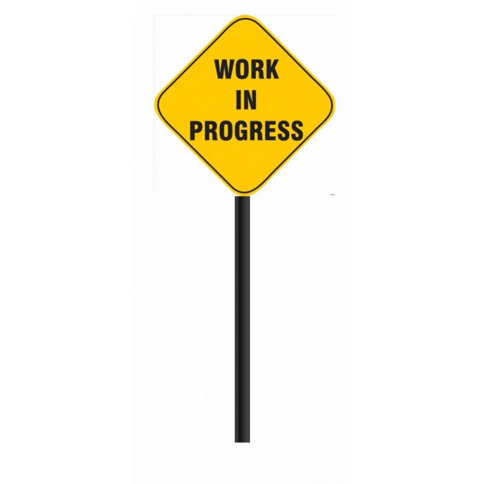

This project includes the use of Arduino, light sensors, moisture sensors, and temperature sensors, combining traditional plant cultivation with technical innovation. The system monitors ideal plant requirements and automatically supplements them based on sensor feedback.
Objectives: To help indoor plants grow well by controlling water, soil moisture, and light intensity automatically.
Results: After testing, the plant grew successfully with optimal water, temperature, and air conditions maintained.
This project focuses on designing an autonomous water-cleaning robot to remove floating contaminants like plastic waste and leaves. The robot integrates mechanical and electronic systems for efficient surface cleanup, powered by renewable energy sources.
Objectives: To reduce water pollution by autonomously collecting debris with minimal human intervention.
Results:
A 3 Degree of Freedom (3DOF) robot arm with drawing capability, using three servo motors for movement and controlled by an Arduino UNO. The project demonstrates basic automation by drawing shapes such as circles, stars, and hearts.
<A home automation project that integrates sensors and PLC to control lights, fans, and doors. It uses IoT for real-time monitoring and dashboard controls, improving safety and energy efficiency.
